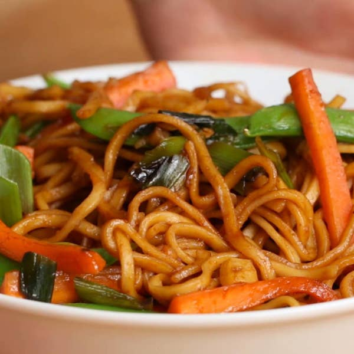

Veggie Garlic Noodles

Preparation Time : 30 minutes
Ingredients:
2 tablespoons vegetable oil(30 mL)
5 cloves garlic, minced
4 spring onions, divided
2 carrots, cut into matchsticks
1 cup snap pea(100 g)
2 tablespoons brown sugar
3 tablespoons soy sauce
9 oz dried rice noodles(250 g), cooked
Instructions:
Heat the oil in a skillet over medium heat. Add the garlic and 3 spring onions and cook for 2-3 minutes.
Add the carrots and peas, before stirring in the brown sugar and soy sauce.
Add the noodles and mix together for another couple of minutes.
Season with salt and pepper, then slice remaining spring onion and top to serve.
Enjoy!
Main Page